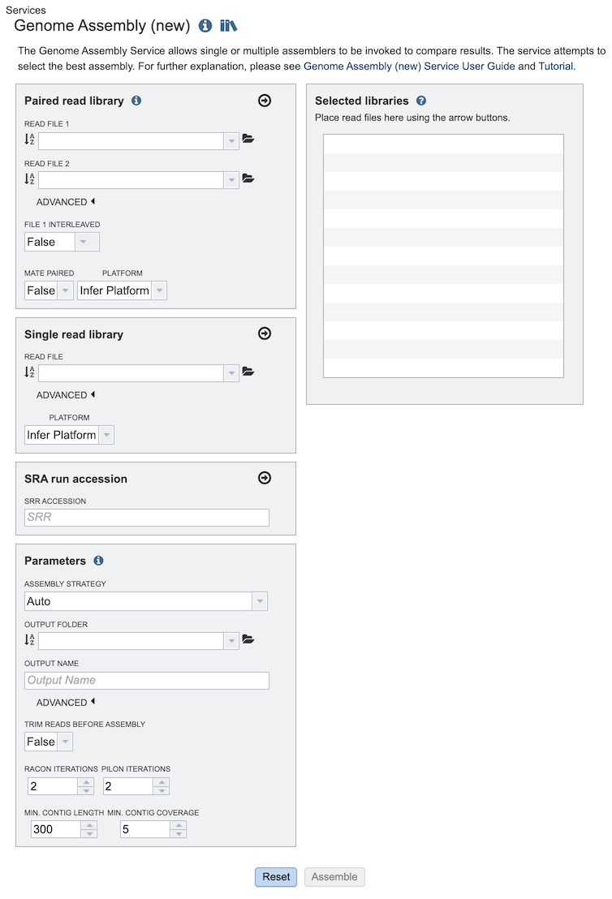
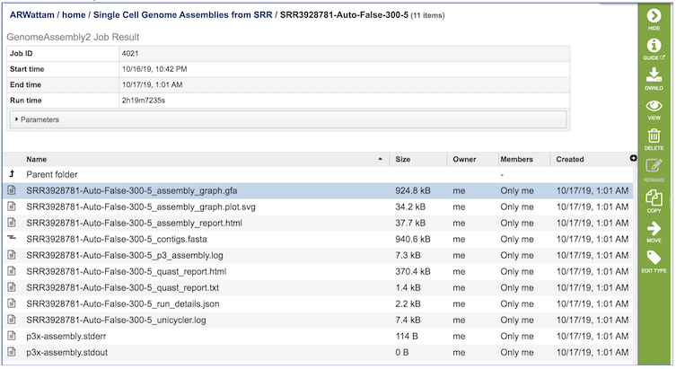

Genome Assembly Service¶
Overview¶
The bacterial Genome Assembly Service allows single or multiple assemblers to be invoked to compare results. Several assembly workflows or “strategies” are available that have been tuned to fit certain data types or desired analysis criteria such as throughput or rigor. Once the assembly process has started by clicking the Assemble button, the genome is queued as a “job” for the Assembly Service to process, and will increment the count in the Jobs information box on the bottom right of the page. Once the assembly job has successfully completed, the output file will appear in the workspace, available for use in the BV-BRC comparative tools and downloaded if desired.
See also¶
Using the Genome Assembly Service¶
The Assembly submenu option under the Services main menu (Genomics category) opens the Genome Assembly input form, shown below. Note: You must be logged into BV-BRC to use this service.

Options¶

Read Input File¶
Paired read library¶
Read File 1 & 2: Many paired read libraries are given as file pairs, with each file containing half of each read pair. Paired read files are expected to be sorted such that each read in a pair occurs in the same Nth position as its mate in their respective files. These files are specified as READ FILE 1 and READ FILE 2. For a given file pair, the selection of which file is READ 1 and which is READ 2 does not matter.
Single read library¶
Read File: The fastq file containing the reads.
SRA run accession¶
Allows direct upload of read files from the NCBI Sequence Read Archive to the BV-BRC Assembly Service. Entering the SRR accession number and clicking the arrow will add the file to the selected libraries box for use in the assembly.
Parameters¶
Assembly Strategy:
Auto - Will use Canu if only long reads are submitted. If long and short reads, as or short reads alone are submitted, Unicycler is selected.
Unicycler - Can assemble Illumina-only read sets where it functions as a SPAdes-optimizer. It can also assembly long-read-only sets (PacBio or Nanopore) where it runs a miniasm plus Racon pipeline. For the best possible assemblies, give it both Illumina reads and long reads, and it will conduct a hybrid assembly.
SPAdes - Designed to assemble small genomes, such as those from bacteria, and uses a multi-sized De Bruijn graph to guide assembly.
Canu - Long-read assembler which works on both third and fourth generation reads. It is a successor of the old Celera Assembler that is specifically designed for noisy single-molecule sequences. It supports nanopore sequencing, halves depth-of-coverage requirements, and improves assembly continuity. It was designed for high-noise single-molecule sequencing (such as the PacBio RS II/Sequel or Oxford Nanopore MinION).
metaSPAdes - Combines new algorithmic ideas with proven solutions from the SPAdes toolkit to address various challenges of metagenomic assembly.
plasmidSPAdes - For assembling plasmids from whole genome sequencing data and benchmark its performance on a diverse set of bacterial genomes.
MDA (single-cell) - A new assembler for both single-cell and standard (multicell) assembly, and it improves on the recently released E+V−SC assembler (specialized for single-cell data).
Output Folder: The workspace folder where results will be placed.
Output Name: User-provided name used to uniquely identify results.
Advanced Parameters¶
Read Processing¶
Normalize Illumina Reads¶
Apply BBNorm to reduce depth variation along genome, down-sampling peaks of dense coverage to approximately the target coverage parameter.
Trim Short Reads¶
Trim reads using TrimGalore to remove any recognized Illumina adapters and low-quality 5’ ends.
Filter Long Reads¶
Use FiltLong to down-sample Nanopore or PacBio reads to the target size (= target genome coverage * estimated genome size).
Genome Parameters¶
Estimated Genome Size¶
Your estimate of how large the genome will be once assembled in either megabases (M) or kilobases (K). It is used to down-sample (BBNorm or FilterLong) to the desired target genome coverage. It is also used as a parameter to Flye or Canu if either is selected as the assembler. It is ignored for metagenome methods.
Target Genome Coverage¶
This is the target depth of reads mapped to the genome. 200X coverage is usually very good for assembling individual genomes. It is ignored for metagenome analyses.
Assembly Polishing¶
Racon and Pilon Iterations¶
Correct assembly errors (or “polish”) using racon and/or Pilon. Both racon and Pilon take the contigs and the reads mapped to those contigs, and look for discrepancies between the assembly and the majority of the reads. Where there is a discrepancy, racon or pilon will correct the assembly if the majority of the reads call for that. Racon is for long reads (PacBio or Nanopore) and Pilon is for Illumina reads. Once the assembly has been polished, it is still possible to do another iteration to further improve the assembly, but with less improvement each round. Two rounds tend to approach saturation.
Assembly Thresholds¶
Minimum Contig Length¶
Filter out contigs shorter than this value from the final assembly
Minimum Contig Coverage¶
Filter out contigs with read depth lower than this value in final assembly. Minimal output contig length: Filter out short contigs in final assembly
Minimal output contig coverage: Filter out contigs with low read depth in final assembly
Selected Libraries¶
Read files placed here will contribute to a single analysis.
Output Results¶

The Genome Assembly Service generates several files that are deposited in the Private Workspace in the designated Output Folder. These include
assembly_graph.gfa. - File used to generate the assembly graph plot.
assembly_graph.plot.svg - Image file containing assembly graph shown as a Bandage plot.
assembly_report.html - Web-viewable report of the assembly including information about the submitted reads and assembly process used.
contigs.fasta - File containig contigs for best assembly.
p3_assembly.log - Log file providing steps used in the assembly.
quast_report.html - Web-viewable Quast-generated report providing evaluation information, summary tables, and plots regarding the assembly.
quast_report.txt - Text version of the Quast report.
run_details.json - Json-formatted file containing information about the assembly process.
unicycler.log - Log file generated by the Unicycler assembly .
p3x-assembly.stderr - Standard error file generated by the assembly job process.
p3x-assembly.stdout - Standard output file generated by the assembly job process.
References¶
Wick, R.R., et al., Unicycler: resolving bacterial genome assemblies from short and long sequencing reads. PLoS computational biology, 2017. 13(6): p. e1005595.
Bankevich, A., et al., SPAdes: a new genome assembly algorithm and its applications to single-cell sequencing. Journal of computational biology, 2012. 19(5): p. 455-477.
Koren, S., et al., Canu: scalable and accurate long-read assembly via adaptive k-mer weighting and repeat separation. Genome research, 2017. 27(5): p. 722-736.
Nurk, S., et al., metaSPAdes: a new versatile metagenomic assembler. Genome research, 2017. 27(5): p. 824-834.
Antipov, D., et al., plasmidSPAdes: assembling plasmids from whole genome sequencing data. bioRxiv, 2016: p. 048942.
Krueger, F., Trim Galore: a wrapper tool around Cutadapt and FastQC to consistently apply quality and adapter trimming to FastQ files, with some extra functionality for MspI-digested RRBS-type (Reduced Representation Bisufite-Seq) libraries. URL http://www. bioinformatics. babraham. ac. uk/projects/trim_galore/.(Date of access: 28/04/2016), 2012.
Wick, R.R., et al., Bandage: interactive visualization of de novo genome assemblies. Bioinformatics, 2015. 31(20): p. 3350-3352.
Gurevich, A., et al., QUAST: quality assessment tool for genome assemblies. Bioinformatics, 2013. 29(8): p. 1072-1075.